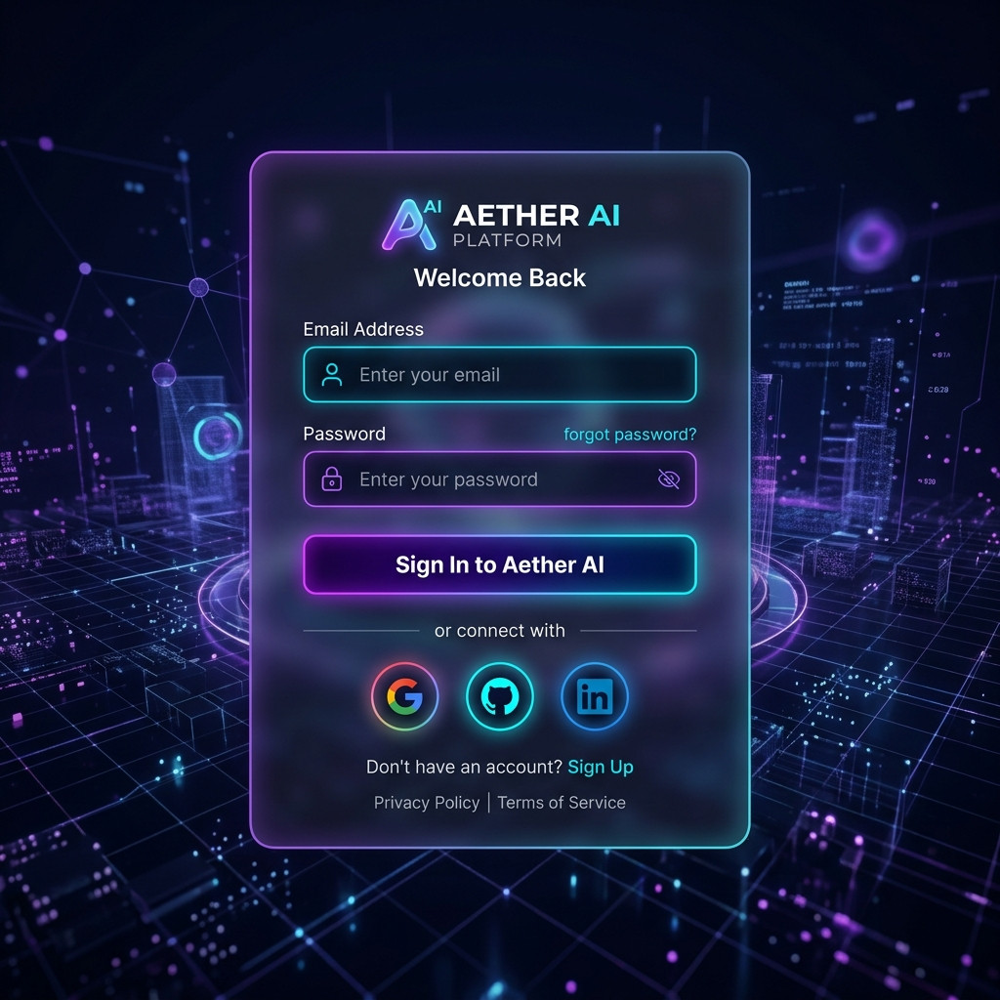
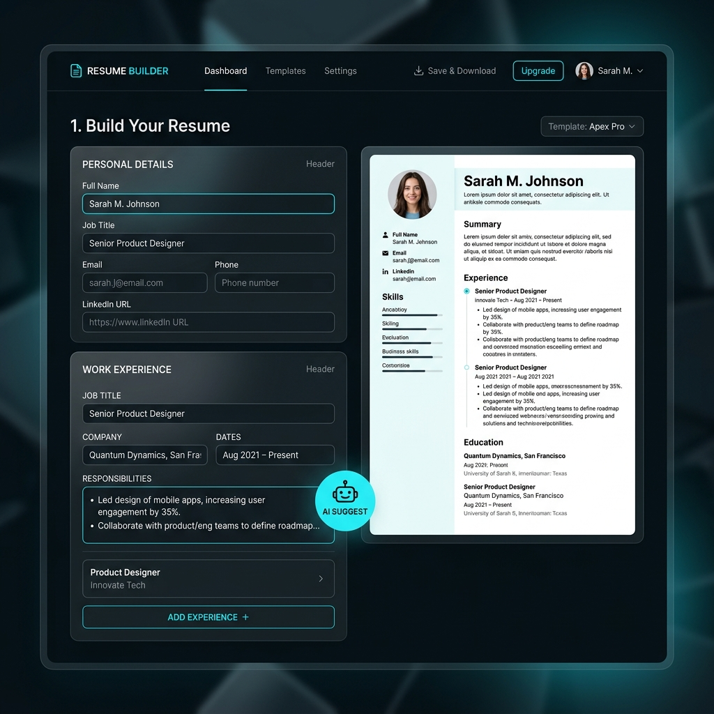
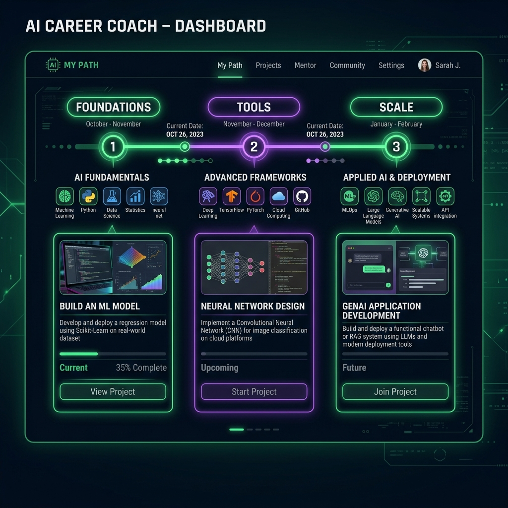
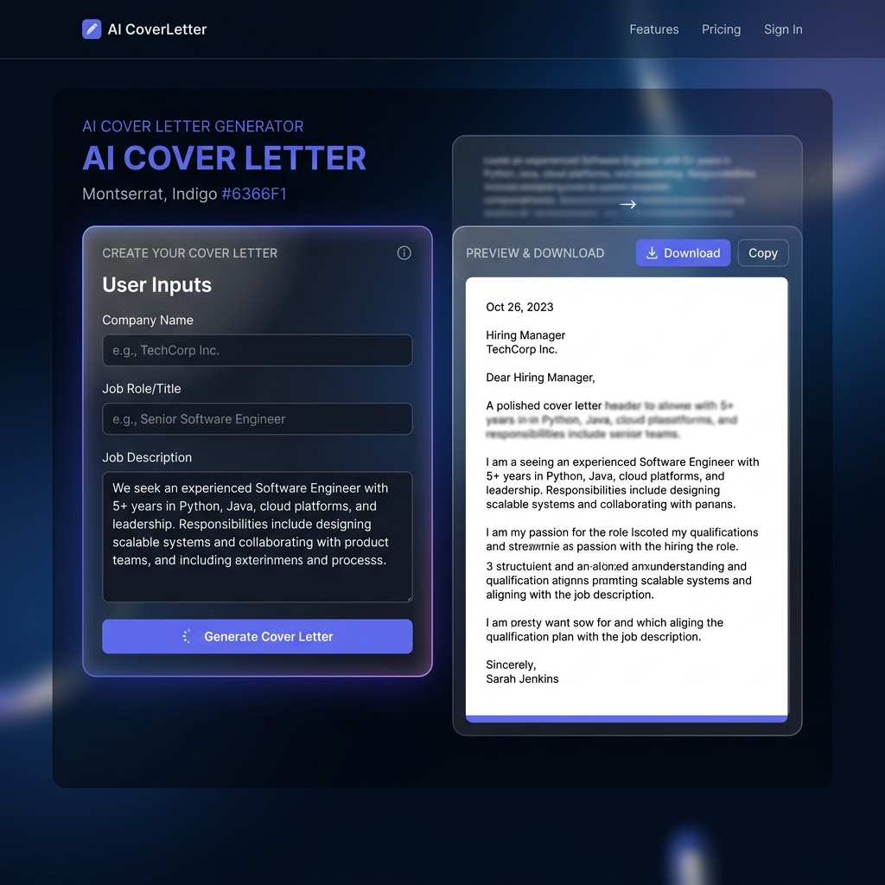
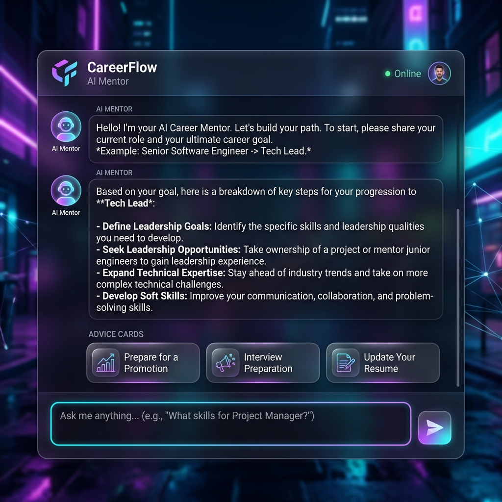
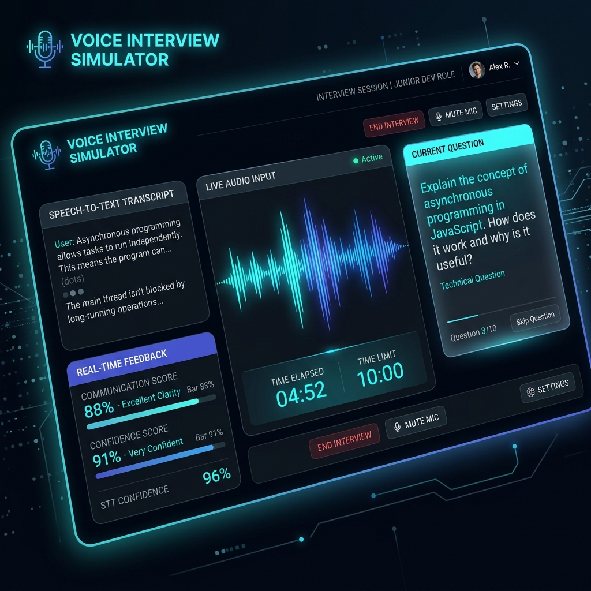

AI-Powered Resume Analyzer &
Career Intelligence Platform
A Modern Full-Stack System for Intelligent Career Development
Artificial Intelligence & Web Engineering
Angular 19, Node.js, SQLite & Gemini 1.5
📄 Project Abstract
Executive Summary- Integrated Platform: A unified ecosystem designed to bridge the gap between candidate resumes and modern automated hiring systems (ATS).
- AI-Driven Insights: Evaluates resume content, extracts structured JSON profiles, and critiques writing style using advanced Large Language Models.
- Career Acceleration: Goes beyond analysis to provide customized training roadmap timelines and verbal voice mock interview practice.
🌟 Unique Selling Proposition (USP)
Unlike static builders, this platform serves as an interactive companion that actively prepares candidates verbally and guides their learning journey based on direct job specifications.
⚠️ The Problem Statement
Hiring Challenges- The ATS Filter Wall: 70-80% of resumes are auto-rejected by Applicant Tracking Systems (ATS) due to missing keywords, before ever reaching a human recruiter.
- Blind Spot Writing: Candidates write weak descriptions lacking measurable metrics (no STAR method) and have no way to audit their layouts.
- Interview Delivery Gaps: Many candidates have great resumes but fail in live interview rounds due to communication anxiety and poor verbal structuring.
🚨 Why is this critical?
Job seekers apply to hundreds of openings without knowing why they are rejected. Meanwhile, companies miss qualified talent because candidate resumes fail to trigger basic parser keywords.
🧭 Proposed Solution
Platform Vision🤖 Real-Time AI Audit
Converts static resume files (PDF/DOCX) into dynamic structured database formats, scoring styling and matches against target roles.
📅 Adaptive Roadmaps
Analyzes user skill sets, audits gaps against target tech tracks, and charts custom 30, 60, and 90-day learning timelines.
🎙️ Speech Mock Coach
Simulates virtual verbal interviews where answers are recorded, transcribed, and analyzed for fluency, confidence, and accuracy.
🗺️ System Architecture Diagram
Architecture💻 Tech Stack Overview
Architecture| Layer | Technologies Used | Core Responsibility |
|---|---|---|
| Frontend Framework | Angular 19, TypeScript, RxJS | Client UI rendering, local state, audio recording controls. |
| Styling System | Tailwind CSS v4, Angular Material | Responsive grids, glassmorphism cards, glowing active animations. |
| Backend Services | Node.js, Express.js | REST endpoints routing, file uploads processing, security. |
| Database Engine | SQLite (Default) / MySQL Adapter | User metadata, resumes, chat threads & mock responses logs. |
| AI & Intelligence | Google Gemini 1.5 Flash API | Resume text structuring, ATS audit, voice answers evaluation. |
🎨 Tech Stack Deep Dive: Frontend
Angular 19 & Signals- Angular 19 (Standalone): Modern design pattern that does away with heavy `NgModule` architecture. Speeds up initial application bootstrapping and lazy-loading of modules.
- Angular Signals: Modern reactive state management that tracks data changes (`signal`, `computed`). Avoids heavy re-rendering of entire components, ensuring high rendering speeds.
- TypeScript Safety: Eliminates type errors at compile-time for complex objects like `ResumeJson` or `AtsReport`.
⚡ Real-time Signals Example
isSidebarOpen = signal(true);
toggleSidebar() { this.isSidebarOpen.update(v => !v); }
📁 Lazy-Loading Modules
Routes are loaded dynamically using `loadComponent()`, ensuring the browser only downloads code for the active screen, optimizing performance.
⚙️ Tech Stack Deep Dive: Backend & Database
NodeJS & SQLite- Node.js & Express.js: Backend core handling API requests. Standardizes CORS handling, Helmet security protections, and morgan logs.
- SQLite Database Engine: Zero-configuration local SQL database (`resume_analyzer.db`). Perfect for immediate deployment without database setup.
- MySQL Unified Connection Adapter: A custom wrapper class in backend config that can swap SQLite for MySQL automatically if credentials are supplied in `.env`.
📂 File Upload Handling (Multer)
File uploads are filtered securely. Only PDF, DOCX, and TXT files are processed, protecting the server from malicious uploads. Temp uploads are pruned automatically.
🧠 Tech Stack Deep Dive: AI Services
Google Gemini API- Model Used: `gemini-1.5-flash` for high-speed, cost-efficient, and accurate text processing.
- Structured Output: Prompts are engineered to return strict JSON syntax, which is safely parsed by the backend:
{ "overallScore": 85, "weaknesses": [...] } - Context Management: For the Mentor Chatbot, complete conversation history + user resume JSON is fed to Gemini to generate custom advice.
🛡️ Graceful API Fallbacks
If the Gemini API key is missing or encounters a rate limit, the system automatically redirects requests to **Mock Fallback Engines** to generate realistic career guides, ATS scores, and voice evaluations seamlessly.
💅 Tech Stack Deep Dive: Styling System
Tailwind CSS & Glassmorphism- Tailwind CSS v4: Utility-first CSS compiling utilities into highly optimized styles. Accelerates layout creation (grid, flexbox, spacing).
- Glassmorphic Cards: Translucent cards styled with backdrop-filters and subtle borders, giving a premium dark aesthetic.
- Custom Keyframe Animations:
- `pulse-ring`: Outer glow shift for recording buttons.
- `waveform-bounce`: Visualizes microphone voice levels.
- `border-glow-shift`: Transitions card borders smoothly.
🎨 Design System Tokens
Visual consistency is maintained using unified tokens across dashboards, sidebar layouts, buttons, and responsive cards.
📂 Feature 1: PDF/DOCX Parsing Engine
Resume Digestion- Multi-Format Support: Seamlessly reads PDF binary structures using `pdf-parse`, and extracts plain-text paragraphs from Word `DOCX` files using `mammoth`.
- Structured Parsing: Extracts messy resume text and passes it to the AI Parser with strict guidelines to categorize candidate details into structured sections.
- JSON Extraction Model: Splits profiles into Personal Info, Experience, Education, Technical/Soft Skills, Certifications, and Achievements.
⚙️ Technical Flow
User Uploads -> Node intercepts File -> Extract plain text -> Send JSON Prompt to Gemini -> Return Structured JSON Profile.
🔍 Feature 2: ATS Diagnostic Auditor
ATS Matching- Weighted Scoring: Computes sub-scores for Formatting, Skills, Keyword Density, Experience Depth, and Education credentials.
- Job Specification Alignment: Candidates paste a target Job Description to compare key qualifications.
- Gap Highlighting: Analyzes text to find missing key industry keywords (e.g. CI/CD, AWS) and lists them clearly.
- Actionable Feedback: Recommends STAR-method improvements (Situation, Task, Action, Result) for work history bullets.
📈 Score Weighting System
Scores are calculated dynamically by comparing extracted resume skills with key terms in the Job Description, helping candidates see exactly why a resume might be filtered out.
📝 Feature 3: Smart Resume Builder
Interactive Editor- Dynamic UI Forms: Custom-built form layout connected to Angular form controls for editing Personal Info, Work History, and Education.
- AI-Assisted Improvement Suggestions: The editor provides a "suggest improvements" button next to fields to rewrite bullets with better action verbs.
- Automatic Versioning: Saving changes creates a new version in `resume_versions`, preserving history so you can restore past edits.
🔄 Version Architecture
Each save commits a JSON string of the resume model to the `resume_json` column. This enables instant version history tracking without creating duplicate database rows.
📅 Feature 4: Career Coach & Roadmaps
Structured Learning- Specific Track Roadmaps: Specialized tracks for DevOps, Full Stack, Cloud Computing, AI, and Cybersecurity.
- 30/60/90-Day Schedules: Generates concrete weekly milestones divided into Foundations, Pipelines, and Scale phases.
- Specific Project Recommender: Recommends hands-on projects (e.g. "Build a Dockerized REST API with CI/CD") to practice skills.
- Active Gap Audits: Highlights skills requested in the track that are missing from your resume.
🎯 Goal-Oriented Learning
Helps candidates transition from passive learning to building portfolio projects, boosting resume strength with the missing keywords.
🎙️ Feature 5: AI Voice Interview Simulator
Speech & AI Evaluation- Audio Recording Controls: HTML5 Web Audio API records user answers directly in the browser.
- Speech-to-Text Conversion: Transcribes audio into text for analysis.
- Multi-Dimensional Scoring: Evaluates answers on communication clarity, confidence level, and technical accuracy.
- Actionable Feedback Feed: Shows strengths, weaknesses, and a perfect sample answer structure.
⚡ Interview Categories
Questions are tailored directly to the candidate's resume history and target role for realistic practice.
💬 Feature 6: AI Career Mentor Chatbot
Interactive Mentorship- Context-Aware Bot: The bot reads your resume JSON and ATS reports to answer career questions with personalized context.
- Persistent Chat logs: Chats are saved in `chatbot_conversations` and `chatbot_messages` tables so you can resume sessions.
- Strategic Advice: Provides guidance on salary negotiations, interview prep, and learning strategies.
🧠 Context Prompt Injection
Prompt: "Candidate Name is [X]. Resume Skills: [Y]. Latest ATS Score: [Z]. Answer their question: [Query]"
👥 Feature 7: Recruiter & Admin Portals
Management Systems📊 1. Candidate Ranking
Recruiters can rank all resumes in the database against job requirements instantly, saving hours of manual screening.
⚙️ 2. Platform Telemetry
Admin panel tracks overall usage stats, user counts, parsing logs, and database metrics in a centralized view.
🛡️ 3. Role Access Control
Uses middleware guards (`roleGuard`) to restrict Recruiter and Admin endpoints, securing user data.
🗃️ Database Table Definitions
Data Layer- resumes: Tracks user files, original filenames, paths, and extracted text.
- ats_reports: Stores formatting and overall scores with JSON lists of missing keywords.
- interview_sessions / answers: Tracks session details, question texts, recorded responses, and AI feedback.
- chatbot_messages: Keeps track of conversation histories for the mentor chat.
id INTEGER PRIMARY KEY AUTOINCREMENT,
user_id INTEGER NOT NULL,
title VARCHAR(255),
extracted_text TEXT
);
CREATE TABLE ats_reports (
id INTEGER PRIMARY KEY,
resume_id INTEGER,
overall_score INTEGER,
missing_keywords_json TEXT
);
🛡️ Security, Protection & Rate Limiting
Secure Backend- JWT authentication: Protects user routes. Access and refresh tokens manage user sessions securely.
- API Security: Helmet secures HTTP headers, and CORS limits cross-origin access.
- Rate-Limiter Protection: Restricts IPs to a maximum of 200 requests per 15 minutes to prevent abuse:
windowMs: 15 * 60 * 1000, max: 200
🔒 SQL Injection & XSS Shield
All database queries use parameterized placeholders (`?`) to prevent SQL injection. File uploads are validated to block unauthorized formats.
🔄 End-to-End Processing Dataflow
Sequence FlowCandidate uploads PDF/Word
Extract text & build JSON
Gemini audits ATS metrics
Practice voice questions
Learn missing skills
Each step is tracked in SQLite, providing a personalized dashboard history every time you log in.
🔐 Page 1: Authentication Login Page
UI Screen 1Futuristic Login Portal
Featuring a centered glassmorphic card design with glowing input fields, password visibility toggles, and single sign-on (SSO) integration buttons.
- Secure Validation: Checks credentials against the user database.
- Token Generation: Returns JWT access & refresh tokens on successful login.
- SSO Mock Integration: Supports authentication via Google, GitHub, and LinkedIn mock buttons.

📊 Page 2: Core User Dashboard
UI Screen 2Control & Monitoring HUD
The candidate command center displaying active resume metrics, ATS summary history logs, and direct navigation links.
- Status Panels: Displays parsed stats (number of versions, average ATS scores).
- History List: Logs previous uploads with date details and direct delete buttons.
- Navigation Bar: A responsive left sidebar with toggle controls for easy screen switching.

🔍 Page 3: Resume Analyzer & ATS Diagnostic
UI Screen 3ATS Analysis Center
A page that processes uploads and audits keywords, structure, formatting, and education matches.
- Drag & Drop Zone: Dashed neon border that handles drag events and displays parsing progress.
- Score Circular Bars: Renders a circle showing sub-scores (formatting, experience, keywords).
- Keyword Audits: Highlights missing industry terms in red to help candidates optimization.

📝 Page 4: Smart Resume Builder
UI Screen 4Interactive Form Editor
An editor where users can modify their profile details, experience entries, and technical skill lists with real-time feedback.
- Form Controls: Dynamically adds or removes experience blocks and updates profiles.
- AI Improvement suggestions: Implements an 'AI Improve' button next to fields to polish language.
- Auto-save versions: Saves updates to the SQLite database as a new version.

📅 Page 5: Career Coach & Roadmap Timeline
UI Screen 5Custom 30-60-90 Day Timelines
Displays learning tracks based on target roles, helping candidates bridge skill gaps.
- Interactive Roadmap Cards: Divides preparation into weekly goals.
- Hands-on Projects: Suggests specific portfolio projects (e.g. Dockerized APIs).
- Certifications: Suggests certifications to boost resume credibility.

✉️ Page 6: Tailored Cover Letter Generator
UI Screen 6Cover Letter Tailoring Tool
Generates cover letters matching target roles and companies.
- Input Panel: Fields for Company Name, Target Role, and Job Description.
- AI Generator: The AI maps your resume details to the job requirements to write a targeted letter.
- One-Click Copy: Includes copy controls to copy the cover letter text easily.

💬 Page 7: AI Career Mentor Chat
UI Screen 7Interactive Mentorship Portal
A chat interface where candidates can ask career questions. The AI reads their resume and ATS reports to answer.
- Markdown Responses: Renders formatted text, bullet lists, and code blocks.
- Chat Thread Lists: Saves previous threads in SQLite so you can resume chat history.
- Context-Driven Answers: Tailors advice based on the user's active resume and skill gaps.

🎙️ Page 8: AI Mock Interview Voice Simulator
UI Screen 8Live Speech Evaluation HUD
Simulates a live technical interview using voice recording.
- Bouncing Waveform: Visualizes audio activity dynamically.
- Evaluation Metrics: Grades communication, technical correctness, and confidence.
- Sample Answering: Shows a model answer for comparison.

🎁 Key Benefits & Project Advantages
Value Proposition📈 Higher Success Rates
Optimizing resume keywords and formatting boosts the chances of passing automated recruitment filters.
⏱️ Saves Hours of Prep
Instead of manual research, candidates get custom roadmaps and mock interviews in seconds.
👥 Smart Recruiter Screening
Allows recruiters to parse and rank candidate lists instantly, simplifying selection workflows.
🔮 Future Scope & Conclusion
The End- Future Scope: Multi-lingual resume parsing, automated job matching via active scraping, browser extension, and video-based emotion coaching.
- Conclusion: The AI Resume Analyzer successfully replaces generic static builders with an intelligent, interactive career mentor.
Thank You!
Questions & Discussion Session